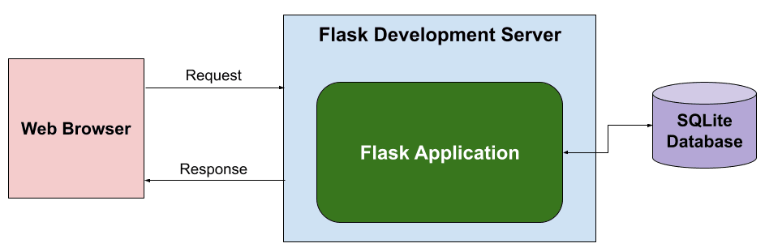
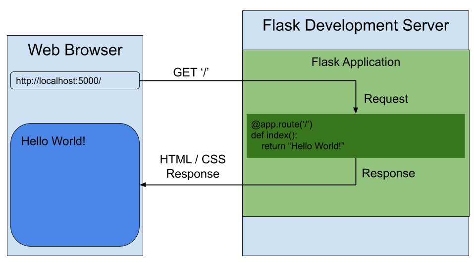
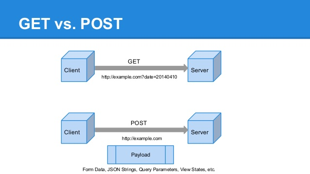
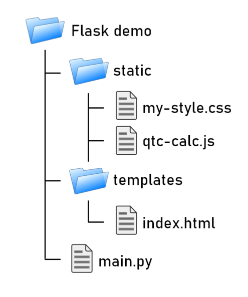
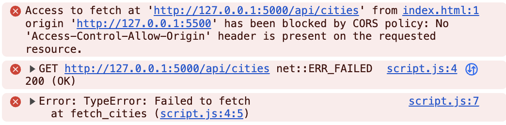
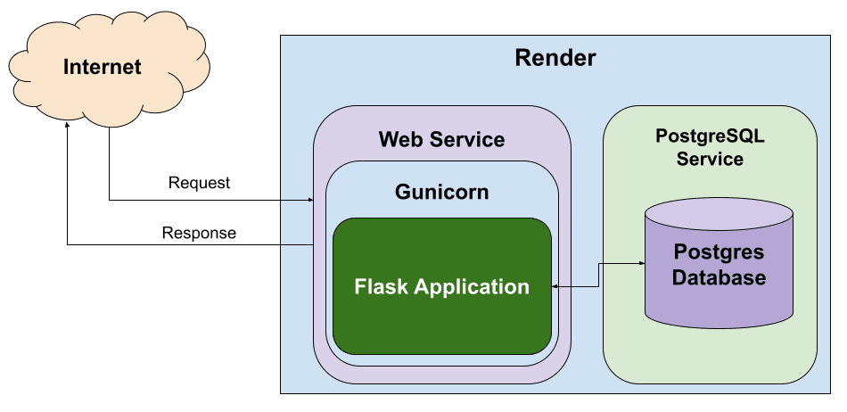

Flask is een lichtgewicht webframework voor Python. Het is ontworpen om snel en eenvoudig webapplicaties te bouwen. Flask volgt het "micro" raamwerk principe, wat betekent dat het minimale tools en libraries biedt. Dit maakt het flexibel en geschikt voor kleine tot middelgrote webapplicaties.

De flask server reageert op http requests en stuurt http respone berichten terug naar de client. Flask kan verbinden naar een databank (je kan verschillende kiezen) om er data uit op te halen via sql queries of er data in weg schrijven.
1. Installatie van Flask
Voordat je Flask kunt gebruiken, moet je het installeren. Dit kan eenvoudig via pip:
pip install Flask2. Je Eerste Flask Applicatie
Hier is een eenvoudig voorbeeld van een "Hello, World!" Flask-applicatie:
from flask import Flask
app = Flask(__name__)
@app.route('/')
def hello_world():
return 'Hello, World!'
if __name__ == '__main__':
app.run()In dit voorbeeld wordt een Flask-applicatie aangemaakt.
De @app.route('/') decorator definieert een route naar de hoofdpagina.
De functie hello_world() retourneert de tekst "Hello, World!".
Wanneer je het script uitvoert, start Flask een webserver en is de applicatie toegankelijk via http://localhost:5000.
3. Routes en URL’s

In Flask kun je routes definiëren met behulp van de @app.route() decorator.
Een route is een pad in de URL die naar een specifieke functie verwijst.
Hier is een voorbeeld met meerdere routes:
@app.route('/about')
def about():
return 'About Page'
@app.route('/user/<username>')
def show_user_profile(username):
return f'User {username}'De eerste route '/about' geeft een statische pagina weer.
De tweede route is dynamisch en accepteert een parameter username.
Deze parameter wordt doorgegeven aan de functie en verwerkt.
4. HTTP Methodes
Flask ondersteunt verschillende HTTP-methodes zoals GET en POST.
De @app.route() decorator kan worden uitgebreid om specifieke methods te accepteren:
from flask import Flask, request, jsonify
@app.route('/login', methods=['GET', 'POST'])
def login():
if request.method == 'POST':
return 'Processing Login'
else:
return 'Login Page'In dit voorbeeld accepteert de '/login' route zowel GET- als POST-verzoeken.
De methode request.method controleert of het een POST-verzoek is en handelt dienovereenkomstig.

5. Templates
Flask templates zijn HTML-bestanden die dynamische content kunnen bevatten door middel van Python-code. Met Flask kun je deze templates gebruiken om content te genereren op basis van variabelen, loops, en conditionele statements. Flask maakt gebruik van Jinja2, een krachtige template engine waarmee je HTML-pagina’s kunt creëren met geavanceerde functionaliteiten.
Een voorbeeld van een template:
<!DOCTYPE html>
<html>
<head>
<title>{{ title }}</title>
</head>
<body>
<h1>{{ heading }}</h1>
<p>{{ message }}</p>
</body>
</html>In Flask kun je de template renderen met de render_template() functie:
from flask import render_template
@app.route('/')
def index():
return render_template('index.html', title='Home', heading='Welcome', message='This is the home page')De variabelen title, heading, en message worden doorgegeven aan het template en ingevuld in de HTML.
Opgelet: De templates moeten in een templates folder staan:

5.1. Waarom Templates Gebruiken?
Templates scheiden de logica van je applicatie van de presentatie ervan. Hierdoor kun je: - Dezelfde template hergebruiken voor verschillende pagina’s. - Dynamische content weergeven zonder je HTML handmatig te moeten genereren. - Een duidelijke scheiding hebben tussen het Python-gedeelte van je code en de HTML-pagina’s.
5.2. Basis Template Gebruik
In Flask maak je templates door HTML-bestanden in een map genaamd templates te plaatsen.
Je kunt deze templates renderen in je routes met behulp van de render_template() functie.
5.2.1. Voorbeeld: Een eenvoudige HTML-pagina
Dit is een eenvoudig voorbeeld van een route die een template rendert:
from flask import Flask, render_template
app = Flask(__name__)
@app.route('/')
def home():
return render_template('index.html')
if __name__ == '__main__':
app.run(debug=True)In dit voorbeeld verwijst index.html naar een bestand dat zich in de templates map bevindt.
De inhoud van index.html zou er als volgt kunnen uitzien:
<!DOCTYPE html>
<html lang="en">
<head>
<meta charset="UTF-8">
<title>Welcome</title>
</head>
<body>
<h1>Welkom op mijn Flask-applicatie!</h1>
</body>
</html>Wanneer de gebruiker de index pagina bezoekt, wordt deze HTML gerenderd en naar de browser gestuurd.
5.3. Dynamische Inhoud met Variabelen
Je kunt variabelen vanuit je route naar de template sturen en die in de HTML weergeven.
@app.route('/user/<name>')
def user(name):
return render_template('user.html', username=name)In dit voorbeeld wordt de variabele name naar de template user.html gestuurd:
<!DOCTYPE html>
<html lang="en">
<head>
<meta charset="UTF-8">
<title>User Page</title>
</head>
<body>
<h1>Welkom, {{ username }}!</h1>
</body>
</html>Het resultaat is dat wanneer je /user/John bezoekt, de pagina "Welkom, John!" toont.
5.4. Loops en Conditionele Statements
Jinja2 ondersteunt ook loops en conditionele statements, waarmee je dynamische lijsten en content kunt tonen.
5.4.1. Voorbeeld: Lijsten renderen
@app.route('/items')
def items():
items = ['Zwaard', 'Schild', 'Helm']
return render_template('items.html', items=items)De template items.html kan een lijst weergeven met een loop:
<!DOCTYPE html>
<html lang="en">
<head>
<meta charset="UTF-8">
<title>Items</title>
</head>
<body>
<h1>Beschikbare Items:</h1>
<ul>
{% for item in items %}
<li>{{ item }}</li>
{% endfor %}
</ul>
</body>
</html>5.5. Includen van Templates
Je kunt ook templates hergebruiken door stukken code te includen, zoals een header of footer die op meerdere pagina’s gebruikt wordt.
{% include 'header.html' %}
<h1>Welkom op de hoofdpagina!</h1>
{% include 'footer.html' %}5.6. Templates oververven
Template erfenis in Flask stelt je in staat om een basislayout te maken die door andere templates geërfd kan worden. Dit wordt gedaan met de block tag in Jinja2.
5.6.1. Voorbeeld: Basislayout
Maak een bestand base.html dat als basis dient voor andere templates:
<!DOCTYPE html>
<html lang="en">
<head>
<meta charset="UTF-8">
<title>{% block title %}Mijn Website{% endblock %}</title>
</head>
<body>
<header>
<h1>Mijn Website</h1>
</header>
<main>
{% block content %}{% endblock %}
</main>
<footer>
<p>Copyright 2024</p>
</footer>
</body>
</html>Een andere template kan deze layout erven en alleen de content en title blokken aanpassen:
{% extends 'base.html' %}
{% block title %}Over Ons{% endblock %}
{% block content %}
<h2>Over Ons</h2>
<p>Wij zijn een bedrijf dat zich specialiseert in softwareontwikkeling.</p>
{% endblock %}6. Flask en Forms
Flask maakt het eenvoudig om formulieren te verwerken. Hier is een voorbeeld van een eenvoudig formulier met een POST-verzoek:
<form method="POST" action="/submit">
<input type="text" name="name">
<input type="submit" value="Submit">
</form>In Flask verwerk je de gegevens van het formulier als volgt:
from flask import request
@app.route('/submit', methods=['POST'])
def submit():
name = request.form['name']
return f'Hello, {name}!'De request.form methode wordt gebruikt om toegang te krijgen tot de gegevens van het formulier.
6.1. Uitgebreider voorbeeld
Een voorbeeld over hoe je een formulier in Flask kunt indienen en de ingevoerde gegevens kunt weergeven op een andere pagina.
Je volgt deze stappen:
-
Maak het HTML-formulier: Dit formulier wordt ingediend naar een route in Flask.
-
Maak een route in Flask die het formulier afhandelt: Deze route verwerkt de formuliergegevens en leidt door naar een pagina waar de gegevens worden weergegeven.
-
Maak een route om de formuliergegevens te tonen: Op deze pagina worden de verzonden gegevens getoond.
6.1.1. Stap 1: Maak het HTML-formulier
<!-- templates/form.html -->
<!DOCTYPE html>
<html lang="nl">
<head>
<meta charset="UTF-8">
<title>Formulier Indienen</title>
</head>
<body>
<h1>Vul je gegevens in</h1>
<form action="/verzenden" method="POST">
<label for="name">Naam:</label>
<input type="text" id="name" name="name"><br><br>
<label for="email">E-mail:</label>
<input type="email" id="email" name="email"><br><br>
<input type="submit" value="Verzenden">
</form>
</body>
</html>Dit formulier gebruikt de POST-methode en stuurt de gegevens naar de route /verzenden.
6.1.2. Stap 2: Maak een route om het formulier te verwerken
Deze route vangt de formuliergegevens op en leidt door naar een pagina waar de gegevens worden weergegeven.
from flask import Flask, request, render_template, redirect, url_for
app = Flask(__name__)
@app.route('/')
def index():
return render_template('form.html')
# Route om het formulier te verwerken
@app.route('/verzenden', methods=['POST'])
def verzend_formulier():
naam = request.form['name']
email = request.form['email']
# Doorverwijzen naar de weergavepagina met de verzonden gegevens
return redirect(url_for('toon_data', naam=naam, email=email))
# Route om de verzonden formuliergegevens weer te geven
@app.route('/weergeven')
def toon_data():
naam = request.args.get('naam')
email = request.args.get('email')
return render_template('display.html', naam=naam, email=email)
if __name__ == '__main__':
app.run(debug=True)6.1.3. Stap 3: Maak een template om de gegevens weer te geven
Maak een template die de verzonden gegevens toont.
<!-- templates/display.html -->
<!DOCTYPE html>
<html lang="nl">
<head>
<meta charset="UTF-8">
<title>Ingevoerde Gegevens</title>
</head>
<body>
<h1>Ingevoerde Gegevens</h1>
<p>Naam: {{ naam }}</p>
<p>E-mail: {{ email }}</p>
</body>
</html>6.1.4. Hoe het werkt:
-
Wanneer een gebruiker naar
/gaat, ziet hij het formulier (form.html). -
Na het indienen van het formulier worden de gegevens naar de route
/verzendengestuurd met de methodePOST. -
De route
/verzendenvangt de gegevens (naamenemail) op en verwijst door naar de route/weergeven, waarbij de gegevens als query parameters worden meegestuurd. -
De route
/weergevengebruikt de query parameters om de templatedisplay.htmlte tonen, met daarin de verzonden gegevens.
6.1.5. De app draaien:
Om deze Flask-app te draaien:
-
Sla de Python-code op als
app.py. -
Sla de HTML-bestanden op in een map genaamd
templates/. -
Installeer Flask met
pip install flask(als dat nog niet is gedaan). -
Start de app met:
python app.py. -
Open je browser en ga naar
http://127.0.0.1:5000/om het formulier te zien, het in te vullen, en de verzonden gegevens te bekijken.
Op deze manier kun je in Flask een formulier verwerken en de ingevoerde gegevens op een andere pagina weergeven.
7. CORS en Flask-CORS
7.1. Wat is CORS?
Een website kan niet zomaar elke api aanspreken, dit komt doordat browsers specifieke beveiliging hebben die cross-origin (andere domeinen) verzoeken beperken. De API (flask) heeft de mogelijkheid om domeinen toe te staan om verzoeken te versturen naar de API (flask).
CORS staat voor Cross-Origin Resource Sharing. Het is een mechanisme waarmee webbrowsers gecontroleerd toegang kunnen krijgen tot bronnen (zoals een API) die op een ander domein, protocol of poort ("origin") staan dan de website die de aanvraag doet.
Standaard blokkeert een browser requests die "cross-origin" zijn uit veiligheidsoverwegingen.
Indien we in onze browser rechtstreekt een html bestand openen en via javascript naar flask gaan. Worden we al geblokkeerd door CORS restricties. Deze restricties kunnen we uitschakelen voor development.
7.2. Waarom bestaat deze beveiliging?
CORS bestaat eigenlijk als een veilige uitzondering op de Same-Origin Policy (SOP).
-
Het probleem: Zonder SOP zou een script op
kwaadaardige-site.comeen verzoek kunnen sturen naarjouw-bank.be(waar jij misschien ingelogd bent) en jouw privégegevens kunnen uitlezen. -
De oplossing: De browser blokkeert het lezen van antwoorden van externe domeinen, tenzij die externe server via CORS-headers expliciet zegt: "Het is oké, ik vertrouw dit verzoek van dit specifieke domein."
7.3. Flask-CORS gebruiken voor local development
Tijdens ontwikkeling draaien je frontend (bijv. React op poort 3000) en backend (Flask op poort 5000) vaak op verschillende poorten. De browser ziet dit als verschillende origins en blokkeert de verbinding.
Dan krijg je dit type error te zien in je browser:

Om dit lokaal op te lossen, gebruiken we de extensie flask-cors om alle verbindingen toe te staan.
Om CORS te configureren in Flask, moet je de flask-cors extensie installeren.
pip install flask-corsEenmaal geïnstalleerd, kun je de flask-cors library importeren.
from flask_cors import CORSNa het importeren, kan je CORS inschakelen met volgende code:
app = flask.Flask(__name__) # Bestaat al in je code (normaal gezien)cors = CORS(app, resources={r"/api/*": {"origins": "*"}}) # Gebruik de app variabele van hierboven7.3.1. Codevoorbeeld
Hieronder zie je hoe je CORS voor de gehele applicatie openzet. Dit voegt de header Access-Control-Allow-Origin: * toe aan je responses.
from flask import Flask
from flask_cors import CORS
app = Flask(__name__)
# Schakel CORS in voor de hele app op alle routes
# Dit staat requests toe vanaf ELKE oorsprong (handig voor dev)
CORS(app)
@app.route("/api/data")
def data():
return {"message": "Dit is nu bereikbaar vanaf je frontend!"}
if __name__ == "__main__":
app.run(debug=True)|
Gebruik de bovenstaande configuratie ( |
8. Flask en JSON
Flask maakt het gemakkelijk om met JSON-gegevens te werken. Je kunt eenvoudig JSON teruggeven als een API-reactie:
from flask import jsonify
@app.route('/api/data')
def get_data():
data = {'name': 'John', 'age': 30}
return jsonify(data)In dit voorbeeld retourneert de route /api/data een JSON-object met de naam en leeftijd.
9. Foutafhandeling
Flask biedt ingebouwde ondersteuning voor foutafhandeling. Je kunt aangepaste foutpagina’s maken voor veelvoorkomende HTTP-statuscodes zoals 404:
@app.errorhandler(404)
def page_not_found(e):
return 'Page not found', 404In dit voorbeeld wordt een aangepaste foutmelding weergegeven wanneer een pagina niet wordt gevonden.
10. Flask + javascript fetch() met filtering
10.1. Flask backend
from flask import Flask, request, jsonify
from flask_cors import CORS
app = Flask(__name__)
CORS(app) # zodat de browser mag praten
@app.route('/api/data')
def data():
# Lees alles wat achter ? in de URL staat
categorie = request.args.get('cat')
prijs = request.args.get('prijs', type=int)
zoek = request.args.get('zoek')
# Hier zou je normaal je filtering doen
# Voor nu sturen we gewoon terug wat we ontvangen hebben
return jsonify({
"jij_vroeg": {
"cat": categorie,
"prijs_max": prijs,
"zoekterm": zoek
},
"bericht": "Filtering werkt!"
})
app.run(debug=True, port=5000)10.2. JavaScript - met fetch api
<button onclick="haal()">Vraag data op</button>
<pre id="uit"></pre>
<script>
async function haal() {
const url = new URL('http://localhost:5000/api/data');
url.searchParams.append('cat', 'boeken');
url.searchParams.append('prijs', '50');
url.searchParams.append('zoek', 'python');
const res = await fetch(url);
const json = await res.json();
document.getElementById('uit').textContent = JSON.stringify(json, null, 2);
}
</script>Of nog korter met URLSearchParams:
const params = new URLSearchParams({cat:'boeken', prijs:50, zoek:'js'});
fetch('http://localhost:5000/api/data?' + params)
.then(r => r.json())
.then(data => console.log(data));11. Development vs production
Flask wordt vaak in een ontwikkelomgeving gebruikt met zijn ingebouwde webserver. Deze webserver is echter niet geschikt voor productieomgevingen omdat het niet voldoende geoptimaliseerd is voor hoge belasting en meerdere gelijktijdige verzoeken.

Gunicorn is een WSGI (Web Server Gateway Interface) server die speciaal is ontworpen voor productieomgevingen. Wanneer Flask in productie wordt gebruikt met Gunicorn, biedt dit de volgende voordelen:
-
Betere prestaties: Gunicorn kan meerdere verzoeken tegelijk afhandelen en biedt ondersteuning voor meerdere processen en threads, wat zorgt voor schaalbaarheid en efficiëntie.
-
Stabiliteit: In tegenstelling tot Flask’s ontwikkelingsserver, kan Gunicorn omgaan met zware belasting zonder te crashen.
-
Veiligheid: Gunicorn biedt betere beveiligingsfunctionaliteiten en is beter geschikt om blootgesteld te worden aan het internet.
-
Multiprocessing: Gunicorn kan meerdere werkprocessen creëren, waardoor applicaties kunnen profiteren van multi-core CPU’s en zware belasting efficiënter kunnen verdelen.
Door Flask met Gunicorn te gebruiken in productie, wordt de applicatie robuuster, sneller en stabieler.
12. Debugging en Herladen
Flask heeft een ingebouwde debugmodus.
Dit helpt bij het opsporen van fouten tijdens de ontwikkeling.
Je kunt debugmodus inschakelen door debug=True aan de app.run() toe te voegen:
if __name__ == '__main__':
app.run(debug=True)Met debugmodus ingeschakeld wordt de applicatie automatisch opnieuw gestart wanneer je wijzigingen aanbrengt in de code.
13. ReactJS Gebruiken met Python Flask
Het integreren van een ReactJS-frontend met een Python Flask-backend: Deze combinatie van technologieën wordt vaak gebruikt om een gescheiden frontend-backendarchitectuur op te zetten. ReactJS wordt gebruikt voor het maken van interactieve user interfaces, terwijl Flask zorgt voor de server-side logica en API-communicatie.
13.1. Waarom ReactJS en Flask combineren?
Het gebruik van een gescheiden frontend (ReactJS) en backend (Flask) biedt verschillende voordelen:
-
Losse koppelbaarheid: React en Flask werken onafhankelijk van elkaar, waardoor de frontend en backend apart kunnen worden ontwikkeld en gehost.
-
Herbruikbare API’s: De backend kan RESTful API’s aanbieden die door meerdere clients (zoals web, mobiel, etc.) gebruikt kunnen worden.
-
Schaalbaarheid: Dit maakt het eenvoudiger om onderdelen van de applicatie te schalen of te vervangen zonder dat dit grote gevolgen heeft voor het hele systeem.
-
backend/: Dit bevat de Flask-server en de API-logica.
-
frontend/: Dit is waar de ReactJS-applicatie zich bevindt, met de componenten, logica en frontendcode.
13.2. Installatie en Setup
13.3. 1. Flask Backend Setup
Begin met het instellen van de Flask-backend. Installeer Flask als volgt:
pip install Flask
pip install Flask-CorsMaak een bestand aan genaamd app.py in de map backend/. Dit is waar we onze Flask-applicatie instellen.
from flask import Flask, jsonify
from flask_cors import CORS
app = Flask(__name__)
CORS(app, resources={r"/api/*": {"origins": "http://localhost:3000"}})
@app.route('/api/data')
def get_data():
data = {"message": "Hello from Flask!"}
return jsonify(data)
if __name__ == '__main__':
app.run(debug=True)In dit voorbeeld wordt een eenvoudige API-route gedefinieerd die een JSON-response retourneert. Wanneer je de server start, kan je via /api/data toegang krijgen tot deze API.
13.4. 2. ReactJS Frontend Setup
Om de frontend op te zetten, gebruik je create-react-app zoals besproken in het hoofdstuk 'reactjs' in webdesign.
npx create-react-app frontend
cd frontendDit genereert een standaard React-projectstructuur. Open vervolgens src/App.js en vervang de inhoud met de volgende code:
import React, { useEffect, useState } from 'react';
function App() {
const [data, setData] = useState({ message: '' });
useEffect(() => {
fetch('/api/data')
.then(response => response.json())
.then(data => setData(data));
}, []);
return (
<div className="App">
<h1>{data.message}</h1>
</div>
);
}
export default App;In dit voorbeeld maakt de React-applicatie een fetch-call naar de Flask-backend om data op te halen. Deze wordt vervolgens weergegeven in de user interface.
13.5. 3. Proxy Instellen
Omdat React en Flask op verschillende poorten draaien, moeten we een proxy instellen in het React-project. Open het bestand package.json in de frontend-map en voeg het volgende toe:
"options": {
"proxy": "http://localhost:5000"
}Dit zorgt ervoor dat alle API-aanvragen die vanuit React komen (bijv. /api/data) worden doorgestuurd naar de Flask-backend op poort 5000.
13.6. De Applicatie Draaien
13.7. 1. Flask Backend
Start de Flask-server in de backend-map door het volgende commando uit te voeren:
python app.pyDe Flask-server draait nu op http://localhost:5000.
13.8. 2. React Frontend
Ga naar de frontend-map en start de React-app met:
npm startDe React-applicatie draait nu op http://localhost:3000, en maakt gebruik van de Flask-backend om data op te halen.
13.9. API-Communicatie en Data Handling
De React-frontend communiceert met de Flask-backend via API-endpoints. Dit stelt je in staat om een dynamische frontend op te bouwen met real-time data die wordt opgehaald van de backend.
In het vorige voorbeeld hebben we slechts één API-endpoint gebruikt. Je kunt meerdere API-routes in Flask definiëren om verschillende soorten data te leveren aan de React-frontend, zoals gebruikersinformatie, productgegevens, of statistieken.
Hier is een uitgebreid voorbeeld waarin we data van een database halen en naar de frontend sturen:
from flask import Flask, jsonify
import sqlite3
app = Flask(__name__)
def get_db_data():
conn = sqlite3.connect('data.db')
cursor = conn.cursor()
cursor.execute('SELECT * FROM users')
users = cursor.fetchall()
conn.close()
return users
@app.route('/api/users')
def get_users():
users = get_db_data()
return jsonify(users)
if __name__ == '__main__':
app.run(debug=True)In dit voorbeeld haalt de backend gebruikersgegevens op uit een SQLite-database en stuurt deze naar de frontend als JSON.
13.10. Afhandelen van Formulieren en Post Requests
Naast het ophalen van data via GET-aanvragen, kun je ook POST-aanvragen sturen vanuit React naar Flask om data naar de server te sturen, bijvoorbeeld bij het invullen van een formulier.
Hier is een voorbeeld van hoe je een POST-aanvraag kunt afhandelen in zowel React als Flask.
ReactJS - versturen van data:
function sendData() {
fetch('/api/send', {
method: 'POST',
headers: {
'Content-Type': 'application/json',
},
body: JSON.stringify({ name: 'John', age: 30 }),
});
}Flask - ontvangen van data:
from flask import Flask, request, jsonify
app = Flask(__name__)
@app.route('/api/send', methods=['POST'])
def receive_data():
data = request.get_json()
print(data) # Verwerk de data zoals nodig
return jsonify({"status": "success"})
if __name__ == '__main__':
app.run(debug=True)Hier wordt een JSON-object met gebruikersinformatie verstuurd vanuit React en ontvangen door Flask. De data kan vervolgens worden verwerkt of opgeslagen.
13.11. Conclusie
Door ReactJS en Flask te combineren, kun je een krachtige en moderne webapplicatie opzetten met een scheiding tussen frontend en backend. React zorgt voor een dynamische gebruikersinterface, terwijl Flask de API en backend-logica afhandelt. Met de flexibiliteit van beide technologieën kun je gemakkelijk uitbreiden en aanpassen naar de behoeften van je project.
14. Extensies
Hoewel Flask een "micro" framework is, kan het worden uitgebreid met verschillende extensies. Enkele populaire Flask-extensies zijn:
-
Flask-SQLAlchemyvoor database-integratie. -
Flask-WTFvoor formuliervalidatie.
15. Extensie: SQLAlchemy in Flask
SQLAlchemy is een Object Relational Mapper (ORM) voor Python die een abstractielaag biedt tussen relationele databases en Python-objecten.
Met SQLAlchemy hoef je niet handmatig SQL-queries te schrijven, maar werk je met Python-objecten om met de database te communiceren.
Flask integreert SQLAlchemy naadloos via de Flask-SQLAlchemy extensie, wat het gebruik van databases eenvoudiger en overzichtelijker maakt.
15.1. Installatie van Flask-SQLAlchemy
Om SQLAlchemy te gebruiken binnen Flask, moet je eerst de benodigde module installeren. Dit kan eenvoudig worden gedaan via pip:
pip install Flask-SQLAlchemyNa installatie kunnen we SQLAlchemy in een Flask-applicatie gebruiken door het te importeren en te configureren.
15.2. Configureren van Flask-SQLAlchemy
Voordat je met SQLAlchemy kunt werken, moet je de database configureren.
In Flask gebeurt dit door de SQLALCHEMY_DATABASE_URI configuratieparameter in te stellen. Dit geeft aan met welk type database je wilt verbinden en waar deze zich bevindt.
15.2.1. Voorbeeld van een basisconfiguratie
from flask import Flask
from flask_sqlalchemy import SQLAlchemy
app = Flask(__name__)
# Configuratie van de database
app.config['SQLALCHEMY_DATABASE_URI'] = 'sqlite:///example.db'
app.config['SQLALCHEMY_TRACK_MODIFICATIONS'] = False
# Initialiseer de SQLAlchemy database
db = SQLAlchemy(app)In dit voorbeeld gebruiken we een SQLite-database. De URI sqlite:///example.db geeft aan dat de database een bestand is met de naam example.db.
15.3. Het maken van een Model
In SQLAlchemy wordt een database weergegeven door middel van "modellen". Een model is een Python-klasse die een tabel in de database vertegenwoordigt, waarbij de attributen van de klasse de kolommen van de tabel vertegenwoordigen.
15.3.1. Voorbeeld van een modelklasse
class User(db.Model):
id = db.Column(db.Integer, primary_key=True)
username = db.Column(db.String(80), unique=True, nullable=False)
email = db.Column(db.String(120), unique=True, nullable=False)
def __repr__(self):
return f'<User {self.username}>'Hier definiëren we een User-model met de volgende kolommen:
* id: een uniek geheel getal dat fungeert als primaire sleutel.
* username: een string van maximaal 80 tekens.
* email: een string van maximaal 120 tekens.
15.4. Het aanmaken van de database
Nadat de modellen zijn gedefinieerd, moet de database worden aangemaakt. Dit kan eenvoudig worden gedaan door de create_all() methode van SQLAlchemy te gebruiken.
15.4.1. Voorbeeld van het aanmaken van de database
with app.app_context():
db.create_all()Dit maakt alle tabellen aan die door de gedefinieerde modellen worden gerepresenteerd in de database.
15.5. Het toevoegen van records/rows
Nadat de database en de modellen zijn aangemaakt, kun je records (rijen) toevoegen aan de tabel door een instantie van een model te maken en deze toe te voegen aan de sessie van de database.
15.5.1. Voorbeeld van het toevoegen van een gebruiker
new_user = User(username='johndoe', email='johndoe@example.com')
db.session.add(new_user)
db.session.commit()In dit voorbeeld voegen we een nieuwe gebruiker toe met de naam 'johndoe' en e-mailadres 'johndoe@example.com'.
De wijzigingen worden doorgevoerd met db.session.commit().
15.6. Het opvragen van records
Je kunt records uit de database opvragen door gebruik te maken van de query-functionaliteit van SQLAlchemy.
15.6.1. Voorbeeld van het opvragen van een gebruiker
user = User.query.filter_by(username='johndoe').first()
print(user.email)Hier zoeken we naar de eerste gebruiker met de gebruikersnaam 'johndoe' en printen het e-mailadres van deze gebruiker.
15.7. Het updaten van records
Om een record te updaten, zoek je het eerst op, wijzig je het gewenste veld, en voer je de wijzigingen door met commit().
15.7.1. Voorbeeld van het updaten van een gebruiker
user = User.query.filter_by(username='johndoe').first()
user.email = 'newemail@example.com'
db.session.commit()In dit voorbeeld wijzigen we het e-mailadres van de gebruiker met de gebruikersnaam 'johndoe' naar 'newemail@example.com'.
15.8. Het verwijderen van records
Je kunt een record verwijderen door de methode delete() te gebruiken en vervolgens de wijzigingen door te voeren met commit().
15.9. Voorbeeld van het verwijderen van een gebruiker
user = User.query.filter_by(username='johndoe').first()
db.session.delete(user)
db.session.commit()Dit verwijdert de gebruiker met de gebruikersnaam 'johndoe' uit de database.
15.10. Relaties tussen modellen
SQLAlchemy ondersteunt relaties tussen tabellen, zoals één-op-veel en veel-op-veel relaties.
Dit kan eenvoudig worden geïmplementeerd door gebruik te maken van de db.relationship() en db.ForeignKey() functies.
15.10.1. Voorbeeld van een één-op-veel relatie
class Post(db.Model):
id = db.Column(db.Integer, primary_key=True)
title = db.Column(db.String(120), nullable=False)
body = db.Column(db.Text, nullable=False)
user_id = db.Column(db.Integer, db.ForeignKey('user.id'), nullable=False)
author = db.relationship('User', backref=db.backref('posts', lazy=True))In dit voorbeeld heeft de Post-tabel een user_id-kolom die verwijst naar de id-kolom in de User-tabel.
De relatie tussen gebruikers en berichten wordt vastgelegd via de db.relationship() methode.
15.11. Migraties uitvoeren
Flask biedt, via de extensie Flask-Migrate, de mogelijkheid om database-migraties uit te voeren. Dit is handig wanneer je wijzigingen aanbrengt in je database zoals het toevoegen van nieuwe kolommen of tabellen.
Je kunt Flask-Migrate installeren via pip:
pip install Flask-MigrateNa installatie kan je migraties uitvoeren, zoals het aanmaken van nieuwe tabellen of het bijwerken van bestaande tabellen.
16. Samenvatting
Flask is een flexibel en lichtgewicht framework waarmee je snel webapplicaties kunt bouwen. Door de eenvoudige structuur en uitbreidbaarheid is het ideaal voor zowel beginners als ervaren ontwikkelaars. Met ingebouwde ondersteuning voor routing, templates, foutafhandeling en extensies biedt Flask alles wat nodig is voor het bouwen van moderne webapplicaties.